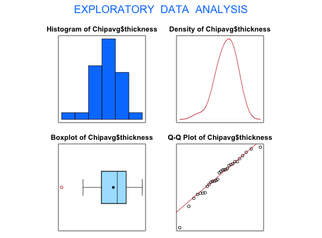

Data for Exercises 6.49 and 7.47
Chipavg
A data frame/tibble with 30 observations on the following three variables.
thickness of the oxide layer for wafer1
thickness of the oxide layer for wafer2
average thickness of the oxide layer of the eight measurements obtained from each set of two wafers
Yashchin, E. 1995. “Likelihood Ratio Methods for Monitoring Parameters of a Nested Random Effect Model.” Journal of the American Statistical Association, 90, 729-738.
Kitchens, L. J. (2003) Basic Statistics and Data Analysis. Duxbury
#> [1] "Chipavg$thickness"#> Size (n) Missing Minimum 1st Qu Mean Median TrMean 3rd Qu #> 30.000 0.000 865.000 981.562 1016.333 1028.125 1018.705 1054.062 #> Max. Stdev. Var. SE Mean I.Q.R. Range Kurtosis Skewness #> 1101.250 52.954 2804.088 9.668 72.500 236.250 0.308 -0.653 #> SW p-val #> 0.339t.test(Chipavg$thickness, mu = 1000)#> #> One Sample t-test #> #> data: Chipavg$thickness #> t = 1.6894, df = 29, p-value = 0.1019 #> alternative hypothesis: true mean is not equal to 1000 #> 95 percent confidence interval: #> 996.5601 1036.1065 #> sample estimates: #> mean of x #> 1016.333 #>boxplot(Chipavg$wafer1, Chipavg$wafer2, name = c("Wafer 1", "Wafer 2"))shapiro.test(Chipavg$wafer1)#> #> Shapiro-Wilk normality test #> #> data: Chipavg$wafer1 #> W = 0.9545, p-value = 0.2228 #>shapiro.test(Chipavg$wafer2)#> #> Shapiro-Wilk normality test #> #> data: Chipavg$wafer2 #> W = 0.96426, p-value = 0.3959 #>t.test(Chipavg$wafer1, Chipavg$wafer2, var.equal = TRUE)#> #> Two Sample t-test #> #> data: Chipavg$wafer1 and Chipavg$wafer2 #> t = -0.55603, df = 58, p-value = 0.5803 #> alternative hypothesis: true difference in means is not equal to 0 #> 95 percent confidence interval: #> -39.10005 22.10005 #> sample estimates: #> mean of x mean of y #> 1012.083 1020.583 #>